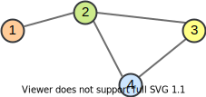
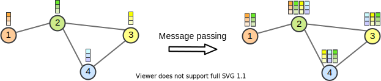

Note: This notebook is written in JAX+Flax. It is a 1-to-1 translation of the original notebook written in PyTorch+PyTorch Lightning with almost identical results. For an introduction to JAX, check out our Tutorial 2 (JAX): Introduction to JAX+Flax. Further, throughout the notebook, we comment on major differences to the PyTorch version and provide explanations for the major parts of the JAX code.
In this tutorial, we will discuss the application of neural networks on graphs. Graph Neural Networks (GNNs) have recently gained increasing popularity in both applications and research, including domains such as social networks, knowledge graphs, recommender systems, and bioinformatics. While the theory and math behind GNNs might first seem complicated, the implementation of those models is quite simple and helps in understanding the methodology. Therefore, we will discuss the implementation of basic network layers of a GNN, namely graph convolutions, and attention layers.
Below, we will start by importing our standard libraries. We will use JAX, Flax and Optax for training our models.
## Standard librariesimport osimport jsonimport mathimport numpy as np import time## Imports for plottingimport matplotlib.pyplot as plt%matplotlib inline from IPython.display import set_matplotlib_formatsset_matplotlib_formats('svg', 'pdf') # For exportfrom matplotlib.colors import to_rgbimport matplotlibmatplotlib.rcParams['lines.linewidth'] =2.0import seaborn as snssns.reset_orig()sns.set()## Progress barfrom tqdm.notebook import tqdm## To run JAX on TPU in Google Colab, uncomment the two lines below# import jax.tools.colab_tpu# jax.tools.colab_tpu.setup_tpu()## JAXimport jaximport jax.numpy as jnpfrom jax import random# Seeding for random operationsmain_rng = random.PRNGKey(42)## Flax (NN in JAX)try:import flaxexceptModuleNotFoundError: # Install flax if missing!pip install --quiet flaximport flaxfrom flax import linen as nnfrom flax.training import train_state, checkpoints## Optax (Optimizers in JAX)try:import optaxexceptModuleNotFoundError: # Install optax if missing!pip install --quiet optaximport optax## PyTorchimport torchimport torch.utils.data as dataimport torchvisionfrom torchvision.datasets import CIFAR10from torchvision import transforms# Path to the folder where the datasets are/should be downloaded (e.g. CIFAR10)DATASET_PATH ="../../data"# Path to the folder where the pretrained models are savedCHECKPOINT_PATH ="../../saved_models/tutorial7_jax"print("Device:", jax.devices()[0])
/tmp/ipykernel_2384472/156319451.py:12: DeprecationWarning: `set_matplotlib_formats` is deprecated since IPython 7.23, directly use `matplotlib_inline.backend_inline.set_matplotlib_formats()`
set_matplotlib_formats('svg', 'pdf') # For export
Device: gpu:0
We also have a few pre-trained models we download below.
import urllib.requestfrom urllib.error import HTTPError# Github URL where saved models are stored for this tutorialbase_url ="https://raw.githubusercontent.com/phlippe/saved_models/main/JAX/tutorial7/"# Files to downloadpretrained_files = []# Create checkpoint path if it doesn't exist yetos.makedirs(CHECKPOINT_PATH, exist_ok=True)# For each file, check whether it already exists. If not, try downloading it.for file_name in pretrained_files: file_path = os.path.join(CHECKPOINT_PATH, file_name)if"/"in file_name: os.makedirs(file_path.rsplit("/",1)[0], exist_ok=True)ifnot os.path.isfile(file_path): file_url = base_url + file_nameprint(f"Downloading {file_url}...")try: urllib.request.urlretrieve(file_url, file_path)except HTTPError as e:print("Something went wrong. Please contact the author with the full output including the following error:\n", e)
Graph Neural Networks
Graph representation
Before starting the discussion of specific neural network operations on graphs, we should consider how to represent a graph. Mathematically, a graph \(\mathcal{G}\) is defined as a tuple of a set of nodes/vertices \(V\), and a set of edges/links \(E\): \(\mathcal{G}=(V,E)\). Each edge is a pair of two vertices, and represents a connection between them. For instance, let’s look at the following graph:

The vertices are \(V=\{1,2,3,4\}\), and edges \(E=\{(1,2), (2,3), (2,4), (3,4)\}\). Note that for simplicity, we assume the graph to be undirected and hence don’t add mirrored pairs like \((2,1)\). In application, vertices and edge can often have specific attributes, and edges can even be directed. The question is how we could represent this diversity in an efficient way for matrix operations. Usually, for the edges, we decide between two variants: an adjacency matrix, or a list of paired vertex indices.
The adjacency matrix\(A\) is a square matrix whose elements indicate whether pairs of vertices are adjacent, i.e. connected, or not. In the simplest case, \(A_{ij}\) is 1 if there is a connection from node \(i\) to \(j\), and otherwise 0. If we have edge attributes or different categories of edges in a graph, this information can be added to the matrix as well. For an undirected graph, keep in mind that \(A\) is a symmetric matrix (\(A_{ij}=A_{ji}\)). For the example graph above, we have the following adjacency matrix:
While expressing a graph as a list of edges is more efficient in terms of memory and (possibly) computation, using an adjacency matrix is more intuitive and simpler to implement. In our implementations below, we will rely on the adjacency matrix to keep the code simple. However, common libraries use edge lists, which we will discuss later more.
Graph Convolutions
Graph Convolutional Networks have been introduced by Kipf et al. in 2016 at the University of Amsterdam. He also wrote a great blog post about this topic, which is recommended if you want to read about GCNs from a different perspective. GCNs are similar to convolutions in images in the sense that the “filter” parameters are typically shared over all locations in the graph. At the same time, GCNs rely on message passing methods, which means that vertices exchange information with the neighbors, and send “messages” to each other. Before looking at the math, we can try to visually understand how GCNs work. The first step is that each node creates a feature vector that represents the message it wants to send to all its neighbors. In the second step, the messages are sent to the neighbors, so that a node receives one message per adjacent node. Below we have visualized the two steps for our example graph.

If we want to formulate that in more mathematical terms, we need to first decide how to combine all the messages a node receives. As the number of messages vary across nodes, we need an operation that works for any number. Hence, the usual way to go is to sum or take the mean. Given the previous features of nodes \(H^{(l)}\), the GCN layer is defined as follows:
\(W^{(l)}\) is the weight parameters with which we transform the input features into messages (\(H^{(l)}W^{(l)}\)). To the adjacency matrix \(A\) we add the identity matrix so that each node sends its own message also to itself: \(\hat{A}=A+I\). Finally, to take the average instead of summing, we calculate the matrix \(\hat{D}\) which is a diagonal matrix with \(D_{ii}\) denoting the number of neighbors node \(i\) has. \(\sigma\) represents an arbitrary activation function, and not necessarily the sigmoid (usually a ReLU-based activation function is used in GNNs).
When implementing the GCN layer in JAX/Flax, we can take advantage of the flexible operations on tensors. Instead of defining a matrix \(\hat{D}\), we can simply divide the summed messages by the number of neighbors afterward. Additionally, we replace the weight matrix with a linear layer, which additionally allows us to add a bias. Written as a Flax module, the GCN layer is defined as follows:
class GCNLayer(nn.Module): c_out : int# Output feature size@nn.compactdef__call__(self, node_feats, adj_matrix):""" Inputs: node_feats - Array with node features of shape [batch_size, num_nodes, c_in] adj_matrix - Batch of adjacency matrices of the graph. If there is an edge from i to j, adj_matrix[b,i,j]=1 else 0. Supports directed edges by non-symmetric matrices. Assumes to already have added the identity connections. Shape: [batch_size, num_nodes, num_nodes] """# Num neighbours = number of incoming edges num_neighbours = adj_matrix.sum(axis=-1, keepdims=True) node_feats = nn.Dense(features=self.c_out, name='projection')(node_feats) node_feats = jax.lax.batch_matmul(adj_matrix, node_feats) node_feats = node_feats / num_neighboursreturn node_feats
To further understand the GCN layer, we can apply it to our example graph above. First, let’s specify some node features and the adjacency matrix with added self-connections:
Next, let’s apply a GCN layer to it. For simplicity, we initialize the linear weight matrix as an identity matrix so that the input features are equal to the messages. This makes it easier for us to verify the message passing operation.
layer = GCNLayer(c_out=2)# We define our own parameters here instead of using random initializationparams = {'projection': {'kernel': jnp.array([[1., 0.], [0., 1.]]),'bias': jnp.array([0., 0.])}}out_feats = layer.apply({'params': params}, node_feats, adj_matrix)print("Adjacency matrix", adj_matrix)print("Input features", node_feats)print("Output features", out_feats)
As we can see, the first node’s output values are the average of itself and the second node. Similarly, we can verify all other nodes. However, in a GNN, we would also want to allow feature exchange between nodes beyond its neighbors. This can be achieved by applying multiple GCN layers, which gives us the final layout of a GNN. The GNN can be build up by a sequence of GCN layers and non-linearities such as ReLU. For a visualization, see below (figure credit - Thomas Kipf, 2016).
However, one issue we can see from looking at the example above is that the output features for nodes 3 and 4 are the same because they have the same adjacent nodes (including itself). Therefore, GCN layers can make the network forget node-specific information if we just take a mean over all messages. Multiple possible improvements have been proposed. While the simplest option might be using residual connections, the more common approach is to either weigh the self-connections higher or define a separate weight matrix for the self-connections. Alternatively, we can re-visit a concept from the last tutorial: attention.
Graph Attention
If you remember from the last tutorial, attention describes a weighted average of multiple elements with the weights dynamically computed based on an input query and elements’ keys (if you haven’t read Tutorial 6 yet, it is recommended to at least go through the very first section called What is Attention?). This concept can be similarly applied to graphs, one of such is the Graph Attention Network (called GAT, proposed by Velickovic et al., 2017). Similarly to the GCN, the graph attention layer creates a message for each node using a linear layer/weight matrix. For the attention part, it uses the message from the node itself as a query, and the messages to average as both keys and values (note that this also includes the message to itself). The score function \(f_{attn}\) is implemented as a one-layer MLP which maps the query and key to a single value. The MLP looks as follows (figure credit - Velickovic et al.):
\(h_i\) and \(h_j\) are the original features from node \(i\) and \(j\) respectively, and represent the messages of the layer with \(\mathbf{W}\) as weight matrix. \(\mathbf{a}\) is the weight matrix of the MLP, which has the shape \([1,2\times d_{\text{message}}]\), and \(\alpha_{ij}\) the final attention weight from node \(i\) to \(j\). The calculation can be described as follows:
The operator \(||\) represents the concatenation, and \(\mathcal{N}_i\) the indices of the neighbors of node \(i\). Note that in contrast to usual practice, we apply a non-linearity (here LeakyReLU) before the softmax over elements. Although it seems like a minor change at first, it is crucial for the attention to depend on the original input. Specifically, let’s remove the non-linearity for a second, and try to simplify the expression:
We can see that without the non-linearity, the attention term with \(h_i\) actually cancels itself out, resulting in the attention being independent of the node itself. Hence, we would have the same issue as the GCN of creating the same output features for nodes with the same neighbors. This is why the LeakyReLU is crucial and adds some dependency on \(h_i\) to the attention.
Once we obtain all attention factors, we can calculate the output features for each node by performing the weighted average:
\(\sigma\) is yet another non-linearity, as in the GCN layer. Visually, we can represent the full message passing in an attention layer as follows (figure credit - Velickovic et al.):
To increase the expressiveness of the graph attention network, Velickovic et al. proposed to extend it to multiple heads similar to the Multi-Head Attention block in Transformers. This results in \(N\) attention layers being applied in parallel. In the image above, it is visualized as three different colors of arrows (green, blue, and purple) that are afterward concatenated. The average is only applied for the very final prediction layer in a network.
After having discussed the graph attention layer in detail, we can implement it below:
class GATLayer(nn.Module): c_out : int# Dimensionality of output features num_heads : int# Number of heads, i.e. attention mechanisms to apply in parallel. concat_heads : bool=True# If True, the output of the different heads is concatenated instead of averaged. alpha : float=0.2# Negative slope of the LeakyReLU activation.def setup(self):ifself.concat_heads:assertself.c_out %self.num_heads ==0, "Number of output features must be a multiple of the count of heads." c_out_per_head =self.c_out //self.num_headselse: c_out_per_head =self.c_out# Sub-modules and parameters needed in the layerself.projection = nn.Dense(c_out_per_head *self.num_heads, kernel_init=nn.initializers.glorot_uniform())self.a =self.param('a', nn.initializers.glorot_uniform(), (self.num_heads, 2* c_out_per_head)) # One per headdef__call__(self, node_feats, adj_matrix, print_attn_probs=False):""" Inputs: node_feats - Input features of the node. Shape: [batch_size, c_in] adj_matrix - Adjacency matrix including self-connections. Shape: [batch_size, num_nodes, num_nodes] print_attn_probs - If True, the attention weights are printed during the forward pass (for debugging purposes) """ batch_size, num_nodes = node_feats.shape[0], node_feats.shape[1]# Apply linear layer and sort nodes by head node_feats =self.projection(node_feats) node_feats = node_feats.reshape((batch_size, num_nodes, self.num_heads, -1))# We need to calculate the attention logits for every edge in the adjacency matrix # In order to take advantage of JAX's just-in-time compilation, we should not use# arrays with shapes that depend on e.g. the number of edges. Hence, we calculate# the logit for every possible combination of nodes. For efficiency, we can split# a[Wh_i||Wh_j] = a_:d/2 * Wh_i + a_d/2: * Wh_j. logit_parent = (node_feats *self.a[None,None,:,:self.a.shape[1]//2]).sum(axis=-1) logit_child = (node_feats *self.a[None,None,:,self.a.shape[1]//2:]).sum(axis=-1) attn_logits = logit_parent[:,:,None,:] + logit_child[:,None,:,:] attn_logits = nn.leaky_relu(attn_logits, self.alpha)# Mask out nodes that do not have an edge between them attn_logits = jnp.where(adj_matrix[...,None] ==1., attn_logits, jnp.ones_like(attn_logits) * (-9e15))# Weighted average of attention attn_probs = nn.softmax(attn_logits, axis=2)if print_attn_probs:print("Attention probs\n", attn_probs.transpose(0, 3, 1, 2)) node_feats = jnp.einsum('bijh,bjhc->bihc', attn_probs, node_feats)# If heads should be concatenated, we can do this by reshaping. Otherwise, take meanifself.concat_heads: node_feats = node_feats.reshape(batch_size, num_nodes, -1)else: node_feats = node_feats.mean(axis=2)return node_feats
Again, we can apply the graph attention layer on our example graph above to understand the dynamics better. As before, the input layer is initialized as an identity matrix, but we set \(\mathbf{a}\) to be a vector of arbitrary numbers to obtain different attention values. We use two heads to show the parallel, independent attention mechanisms working in the layer.
We recommend that you try to calculate the attention matrix at least for one head and one node for yourself. The entries are 0 where there does not exist an edge between \(i\) and \(j\). For the others, we see a diverse set of attention probabilities. Moreover, the output features of node 3 and 4 are now different although they have the same neighbors.
Conclusion
In this tutorial, we have seen the application of neural networks to graph structures. We looked at how a graph can be represented (adjacency matrix or edge list), and discussed the implementation of common graph layers: GCN and GAT. The implementations showed the practical side of the layers, which is often easier than the theory. For implementing full GNNs in JAX, we recommend taking a look at Jraph. There are a lot of applications that benefit from GNNs, and the importance of these networks will likely increase over the next years.
If you found this tutorial helpful, consider ⭐-ing our repository. For any questions, typos, or bugs that you found, please raise an issue on GitHub.